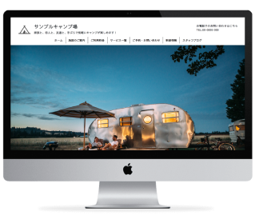

- 
Profile
福岡出身、東京在住のさきちょです。
現在はWebサイトの作成に興味があり、勉強をしています。
そしてWriteCodeEveryday継続中…Githubの草を生やそうと必死です。
また、同世代コミュニティ「Enclass」に所属しており、たまにイベントや勉強会をしています。
保有資格
▶ ITパスポート
▶ Oracle Certified Java Programmer, Silver SE 8 認定資格
▶ Webクリエイター能力試験（スタンダード・エキスパート）
JavaScript
html,css,javascriptで作った簡単な作品達です。
勉強用で作ったものですので、完成度は低くてもご了承ください。。